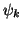
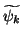
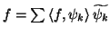
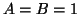
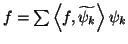

Non, un repère étroit ne forme pas nécessairement une base de Riesz. C'est toujours le cas si . Les vecteurs  et  forme un repère (étroit) dans , mais il est facile de vérifier que ce n'est pas une base de Riesz. Par contre, si  et que les éléments du repère ont une norme de , alors il s'agit bien d'une base de Riesz, et en fait, d'une base orthonormée.